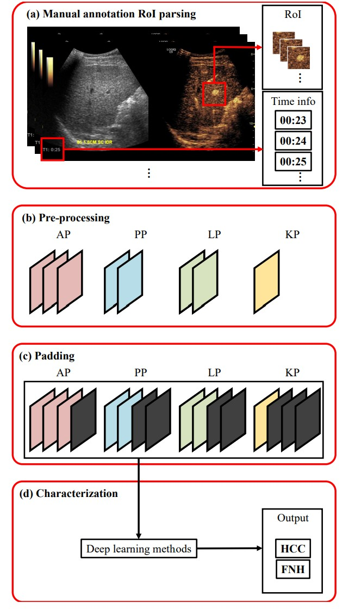

Advanced CEUS Deep Learning Pipeline

Synchronizing overview from sheet...
Key Achievements
- Synchronizing achievements from sheet...
Milestones
- Synchronizing milestones from sheet...
Abstract
Clinical contrast-enhanced ultrasound (CEUS) data are often acquired at irregular temporal intervals, making automated analysis difficult. This challenge is especially pronounced in liver CEUS due to respiratory motion and variations in acquisition settings, which can degrade image consistency.
We investigated ten different padding strategies to handle temporal irregularity, evaluating their effects on classification performance using two deep learning architectures: a 3D convolutional neural network (3D-CNN) and a convolutional recurrent neural network (CNN-LSTM), under five-fold cross-validation. The 3D-CNN achieved the highest F1 score (0.97) when using phase-level pre-padding with adjacent frames, while the CNN-LSTM performed best (F1 score: 0.90) with blank-frame pre-padding.
Statistical analysis using the Friedman test revealed that the choice of padding strategy significantly affected model performance in both architectures (p < 0.01). These findings highlight that, despite the inherent temporal irregularity in liver CEUS, high classification accuracy can still be achieved when appropriate preprocessing techniques are applied.